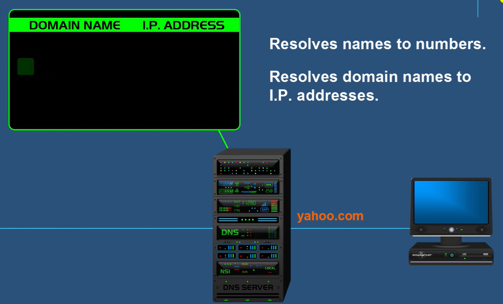
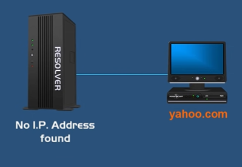

Domain Name System
Introduction:-
-
You type in the name of a website say Yahoo.com in your web browser.
- This name that you enter is the domain name of the website
- What you could have done is type in the Ip address of this website which is 74.125.44.25
- But there are millions of websites and you cannot possibly remember the Ip address for each of them and therefore a domain name is provided for the same.
- So you simply type in the domain name & let DNS convert it into its Ip address for you.

- As soon as you type yahoo.com on your web browser The DNS server will search through its database to find a matching ip address for that domain name.
- When it finds it , it will resolve the domain name to the ip address of the website and once this process is done your computer will be able to communicate with the yahoo web server and retrieve web pages.
Step by step explaination of inside working of DNS
-
After you type Yahoo.com in your web browser, there are two possibilities:-
- Your browser or operating system will find out the ip address for yahoo.com in its cache memory.
- It won't find out the the ip address for yahoo.com in its cache memory in which case go to the next step.
- In case the ip address is not found in the cache memory, your computer will send query (No ip address found) to the next level which is called the resolver server. The resolver server is basically your internet service provider.
- When resolver server receives the query, it will check its own cache memory to find the ip address of yahoo.com, and if it doesn't find out the ip address it will send the query to the next level which is the root server.

- When the root server receives the query, it's not going to know the ip address for yahoo.com but it knows where to send the resolver to help it find out the ip address.
- So, the root server directs the resolver to something called TLD server(Top level domain server)
- Top Level Domain server:-
- TLD server stores the address information of top level domains: (.com, .org, .net )
- The TLD server which has .com as top level domain is the one of which yahoo.com is a part of.
- Now.. when the TLD server will receive the query, it won't know the ip address of yahoo.com, it will again direct the resolver to to the final level which is ANS (Authoritative Name Server)
- ANS:-
- ANS is responsible for knowing everything about the domain which includes the ip address.
- So when ANS receives the query from the resolver it will respond with the ip address for yahoo.com.
- Finally the resolver will get the ip address for yahoo.com and it will store it in its cache memory so that it doesn't have to repeat the above process again if it receives another query for yahoo.com.
- The resolver will tell your computer the ip address for yahoo.com and your computer can now communicate with yahoo website and retrieve web pages.